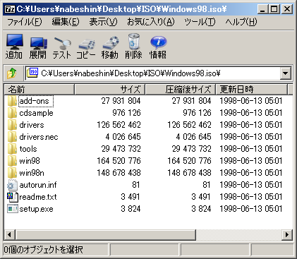
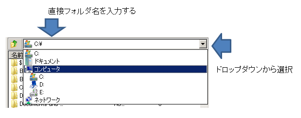
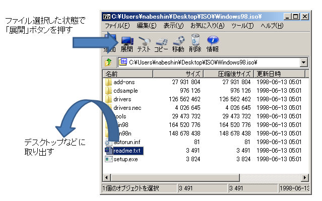

ISOの中身を表示する、ファイルを取り出す
7-ZipはISOファイルの閲覧に対応しているので、ISOファイルをCDやDVDに焼いたり、仮想ドライブにマウントすることなく、7-Zipで開くだけで中身のファイルを表示したり、取り出したりすることができます。
ISOファイルに7-Zipが関連付けられている場合
ISOファイルが7-Zipに関連付けられている場合は、ISOファイルをダブルクリックするだけで、ISOファイルの中身が表示されます。
（※画面のツールバーは7-Zip Theme Managerで外観を変更しており、標準の画面と異なります）
7-Zipを起動してからISOファイルを閲覧
ISOファイルが関連付けられていない場合は、7-Zip File Manegerを起動してからISOファイルのある場所を指定して、ISOファイルをクリックします。
画面上のほうのところで、ISOファイルが置いてあるフォルダを選択したり、右側のドロップダウンメニューからドライブやフォルダを選択していきます。下側のペインにもフォルダは表示されているので、エクスプローラでの操作同様にフォルダを順に選択してけばOKです。最後に見たいISOファイルを選択すれば、中身が閲覧できます。
ISOファイルを取り出す
ISOファイル取り出すには、解凍する際とまったく同じ要領です。 取り出したいファイルもしくはフォルダを選択してから、それをドラッグ＆ドロップでデスクトップなどに持ち出すか、「展開」ボタンを押して取り出し先フォルダを指定します。
OSDN Project